来源：https://kxgiimtbac.feishu.cn/docx/ZZnHd03PyojHUJxtmMEccS8tnQd
最近参加了生财有术的“AI编程（爬虫）”航海。在此之前，我已经在ChatGPT编程领域做了一些探索和实践，并在生财分享了3篇ChatGPT编程相关的文章，其中两篇收获了精华：
工具站新手怎样通过ChatGPT编程落地工具站产品
如何通过ChatGPT Code Interpreter生成视频特效和编写代码实现Chrome插件
怎样在航海21天通过ChatGPT编程上线20个Chrome插件
ChatGPT正在帮助我实现一些力所能及但过去难以落地的产品。本次航海希望跟随教练的思路和手册的指引，学习更多AI编程思路，补充自己的盲点和不足，争取通过ChatGPT编写出更多有价值的产品。于是，有了接下来一系列的实践和探索。
声明：由于本文涉及一些平台的内容爬取，因此仅限学习交流，请勿做任何不合规的内容采集，本文也将隐去所有相关平台的网址和名称。
目录
我们先按生财航海手册中的提示词来测试一下通过ChatGPT编写爬虫工具爬取某网站文章。
提示词：
写一个爬虫程序，按下面的要求在我的 windows 电脑上帮我抓取某网站文章。 1. 使用 python3 和最新版的 selenium 2. 目标网站：https://www.xxx.com/ 3. 输入关键字[ AI ]，点击[ 搜文章 ]按钮 4. 爬取内容: 爬取标题、摘要、链接、来源 5. 爬取后的内容保存到Excel文件中，Excel文件命名为AI_文章_时间 6. 爬取前5页，每爬完1页休眠5s 请给我完整可运行的程序，让我看到浏览器中操作的过程，并指导我安装程序依赖的所有库。 你可以先执行步骤 2 和步骤 3 了解网页的结构，然后再生成代码。
注：“某网站”改为网站名称，目标网站改为需要爬取网页的链接。
这段提示词对我最大的启发是：
我们可以根据我们的业务理解和编程经验，尽可能详细地告诉ChatGPT我们的编程需求，提示词可以详尽到python的版本、python的类库、目标网站及其页面元素，以及执行的步骤和细节。这样最大的好处是：ChatGPT会在我们限定的范围内编写出符合我们实际业务需求的代码，避免因为存在多种解决方案和不相关业务需求使得ChatGPT给出的代码偏离我们的实际需求。
这一点非常重要，我们在通过ChatGPT编程的实践过程中发现，如果你的编程需求不那么明确，ChatGPT可能会发散编写出其它它觉得有可能正确的代码逻辑，比如说：你没有指定Python类库，它有可能会自行采用其它类库；再比如你没有指定网站需要爬取的元素，它可能会根据它过往学习的网站代码结构来指定网站的元素；再比如你没有指定爬取的页数和翻页前休眠等待5s，它可能会直接偷懒省略这些步骤，等等。这样，ChatGPT最终给出的代码可能会偏离我们的实际需求。
我分别通过GPT-4o和GPT4根据上面提示词来编写爬虫程序，二者编写出来的代码一开始都存在细微问题，但是通过与ChatGPT对话，最终都能抓取到该网站文章。相较来说，GPT-4o给出的代码问题少一点点，可能GPT-4o更智能一些，但二者均可以通过合理的对话解决这个爬虫程序的问题。（如需ChatGPT对话记录，请联系易焘）
ChatGPT给出代码后，我用我平时使用的编辑器UltraEdit进行粘贴保存（你也可以用Notepad++、记事本或者其它编辑器保存代码），打开Windows的命令行窗口（在开始菜单处通过搜索“cmd”，找到后点击鼠标右键，选择“以管理员身份运行”打开）：
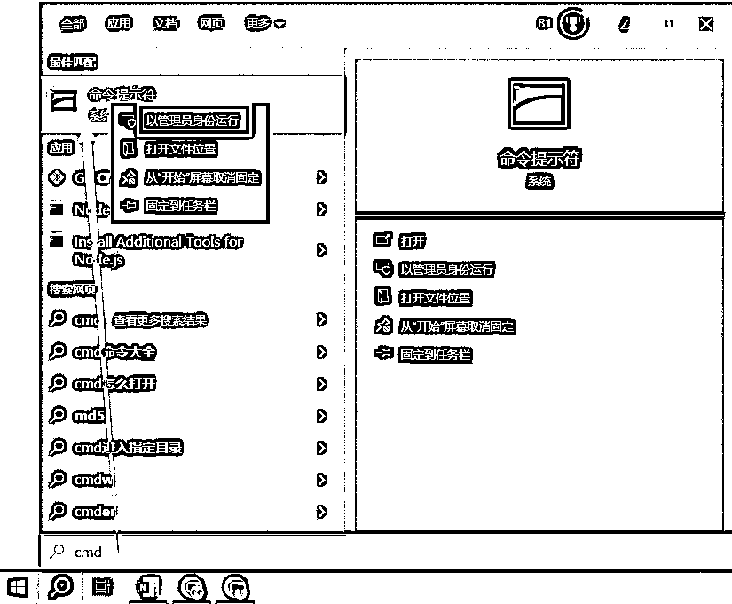
进入Python程序所在目录：
按照ChatGPT提示的命令执行程序：python xxx_crawler.py （“xxx_crawler.py”换成你的Python文件名）
结果执行程序存在一个小问题，提示“SyntaxError: Non-UTF-8 code starting ...”：
这个问题表示需要把文件保存为UTF-8编码格式（可通过记事本打开文件，“另存为”时在“保存”按钮左侧选择“UTF-8”编码格式）；
执行Python程序的时候，我并没有预先安装或者检查是否已经安装selenium和webdriver-manager，不过，这没有关系，执行过程中会因为缺少selenium和webdriver-manager而报错，我们只需把报错信息粘贴给ChatGPT，ChatGPT就会告诉我怎样安装selenium和webdriver-manager：
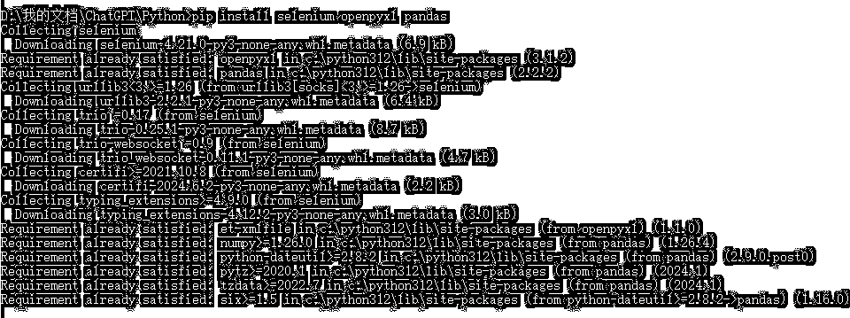
安装webdriver-manager遇到这样的报错“ERROR: Could not install packages due to an OSError ...”，经与ChatGPT对话可得知需要以管理员权限运行命令提示符，所以我们打开命令行窗口的时候，应该点击鼠标右键，选择“以管理员身份运行”打开，再执行安装webdriver-manager的命令：
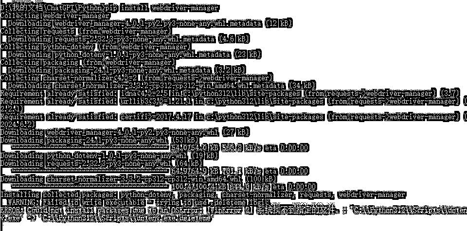
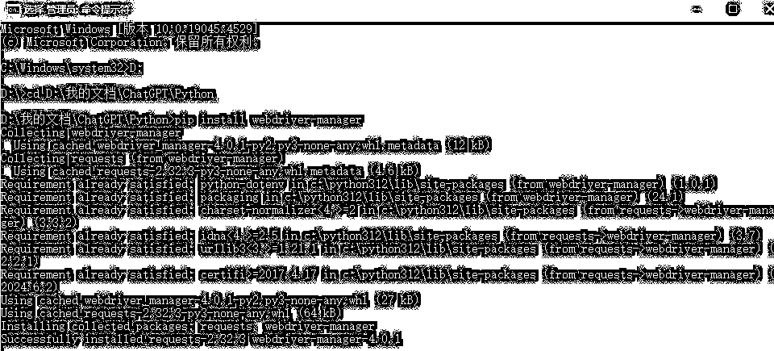
GPT-4o和GPT4给出的爬虫代码中，指定需要采集内容的元素时，有一个元素都出现同样的错误：“内容来源”字段都是用了'.//div[@class="s-p"]/a'，但事实上搜狗搜索结果页面中的记录不存在这个元素。经与ChatGPT对话，ChatGPT表示“无法直接访问目标网站以确认网页结构”，但他给出了一些解决方案，包括改进代码增加调试步骤，还包括引导我们通过谷歌浏览器的开发者工具来查看页面中的实际元素：
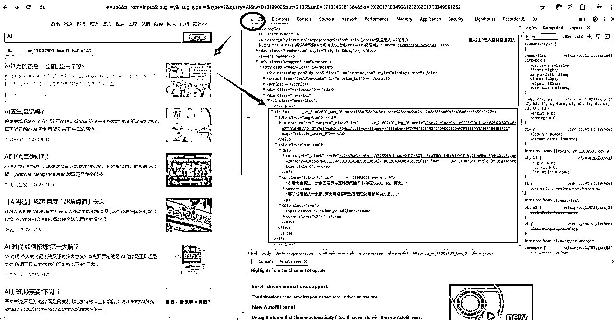
最终把内容来源字段修改成'.//div[@class="s-p"]/span[@class="all-time-y2"]'就解决了这个问题，成功抓取到该网站文章：
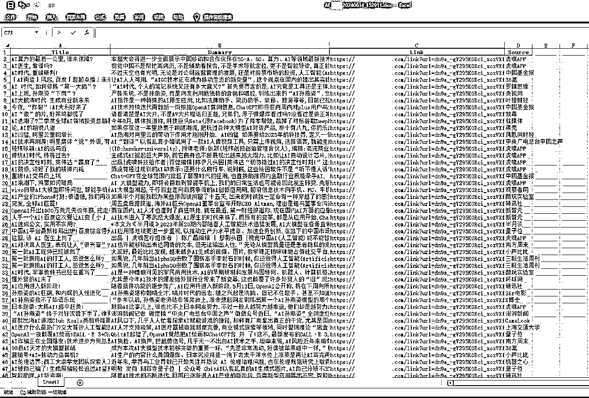
GPT-4o输出的爬取网站文章的最终代码如下：
import time
import pandas as pd
from selenium import webdriver
from selenium.webdriver.common.by import By
from selenium.webdriver.common.keys import Keys
from selenium.webdriver.chrome.service import Service as ChromeService
from webdriver_manager.chrome import ChromeDriverManager
# 设置Chrome选项
chrome_options = webdriver.ChromeOptions()
chrome_options.add_argument("--start-maximized")
# 创建WebDriver实例
driver = webdriver.Chrome(service=ChromeService(ChromeDriverManager().install()), options=chrome_options)
# 访问目标网站
driver.get("https://www.xxx.com/") ### 目标网站修改成需要爬取网页的链接 ###
# 输入关键字并点击搜索按钮
search_box = driver.find_element(By.ID, "query")
search_box.send_keys("AI")
search_box.send_keys(Keys.RETURN)
time.sleep(3) # 等待页面加载
# 准备存储数据的列表
data = []
# 爬取前5页
for page in range(1, 6):
print(f"正在爬取第{page}页...")
articles = driver.find_elements(By.XPATH, "//ul[@class='news-list']/li")
for article in articles:
try:
title_element = article.find_element(By.XPATH, ".//h3/a")
title = title_element.text
link = title_element.get_attribute("href")
summary = article.find_element(By.XPATH, ".//p").text
source = article.find_element(By.XPATH, ".//div[@class='s-p']/span[@class='all-time-y2']").text
# 打印调试信息
print(f"Title: {title}")
print(f"Summary: {summary}")
print(f"Link: {link}")
print(f"Source: {source}")
data.append({"Title": title, "Summary": summary, "Link": link, "Source": source})
except Exception as e:
print("Error:", e)
# 翻页
if page < 5:
try:
next_button = driver.find_element(By.ID, "xxx_next")
next_button.click()
time.sleep(5) # 每爬完一页休眠5秒
except Exception as e:
print("无法点击下一页:", e)
break
# 关闭浏览器
driver.quit()
# 保存数据到Excel文件
current_time = time.strftime("%Y%m%d_%H%M%S")
file_name = f"AI_文章_{current_time}.xlsx"
df = pd.DataFrame(data)
df.to_excel(file_name, index=False, engine='openpyxl')
print(f"数据已保存到 {file_name}")
接下来，我们继续按生财航海手册中的提示词来测试一下通过ChatGPT编写爬虫工具爬取网站图片。
提示词：
写一个爬虫程序，按下面的要求在我的 windows 电脑上帮我抓取某网站图片。 1. 使用 python3 和最新版的 selenium 2. 目标网站：https://image.xxx.com/ 3. 输入关键字[ AIGC ]，点击[ 搜索 ]按钮 4. 爬取内容: 图片 5. 爬取后的内容保存到AIGC文件夹中，图片文件命名为1++ 6. 爬取10张图片，休眠3s，页面下滑滚动，直到爬到100张图片后停止。 请给我完整可运行的程序，让我看到浏览器中操作的过程，并指导我安装程序依赖的所有库。 你可以先执行步骤 2 和步骤 3 了解网页的结构，然后再生成代码。
注：“某网站”改为网站名称，目标网站改为需要爬取网页的链接。
我使用GPT-4o据上面提示词来编写爬虫程序，整个过程一气呵成，没有遇到任何错误和阻碍，最终成功爬取了该网站中搜索出来的图片。（为了方便阅读，ChatGPT对话记录附在文末附录中）
GPT-4o输出的爬取网站图片的最终代码如下：
import os
import time
import requests
from selenium import webdriver
from selenium.webdriver.common.by import By
from selenium.webdriver.common.keys import Keys
from selenium.webdriver.chrome.service import Service
from webdriver_manager.chrome import ChromeDriverManager
from selenium.webdriver.chrome.options import Options
# 设置Chrome浏览器的选项
chrome_options = Options()
chrome_options.add_argument("--start-maximized") # 最大化窗口
# 初始化Chrome浏览器驱动
driver = webdriver.Chrome(service=Service(ChromeDriverManager().install()), options=chrome_options)
# 打开网站图片
driver.get("https://image.xxx.com/") ### 目标网站修改成需要爬取网页的链接 ###
# 找到搜索框并输入关键字 "AIGC"
search_box = driver.find_element(By.NAME, "word")
search_box.send_keys("AIGC")
search_box.send_keys(Keys.RETURN)
# 等待页面加载
time.sleep(3)
# 确保目标文件夹存在
if not os.path.exists("AIGC"):
os.makedirs("AIGC")
# 爬取图片
image_urls = set()
while len(image_urls) < 100:
# 获取所有图片元素
img_elements = driver.find_elements(By.CSS_SELECTOR, "img.main_img")
for img in img_elements:
if len(image_urls) >= 100:
break
src = img.get_attribute("src")
if src and src.startswith("http"):
image_urls.add(src)
# 页面下滑
driver.execute_script("window.scrollTo(0, document.body.scrollHeight);")
time.sleep(3) # 等待页面加载
# 下载图片
for idx, url in enumerate(image_urls):
try:
response = requests.get(url)
with open(f"AIGC/{idx + 1}.jpg", "wb") as file:
file.write(response.content)
print(f"Downloaded image {idx + 1}")
except Exception as e:
print(f"Could not download image {idx + 1}: {e}")
# 关闭浏览器
driver.quit()
print("Finished downloading images.")
大家在通过ChatGPT编程的过程中，每次ChatGPT给出的代码不尽相同，你需要根据实际情况做测试并和ChatGPT对话解决可能遇到的各种问题。当然，如果你熟悉业务需求和代码逻辑，在提示词中尽可能详细地把任务需求和业务流程告诉ChatGPT，将会更有助于它编写出符合需求的代码。
上述两个提示词的测试过程中，ChatGPT给出的代码中都使用了webdriver_manager库来自动管理和安装ChromeDriver，无需手动指定驱动路径。而有些时候ChatGPT给出的代码需要你手动修改设置ChromeDrive路径，航海手册中的代码就是采用这种方式，这就需要开发者自行管理和维护ChromeDriver驱动程序。如果你不想另行安装ChromeDriver驱动程序或修改设置ChromeDrive路径，可以预先在提示词中告知ChatGPT“使用webdriver_manager库来自动管理和安装ChromeDriver”，这样你得到的代码大概率就是自动安装ChromeDriver的方案。
此外，我们还可以根据实际业务需求灵活调整提示词的流程，比如说对列表进行排序，再比如校验验证码和等待登录等等，这也是我们接下来将要进一步探讨的问题。
前面两个例子测试了通过ChatGPT编写Python爬虫工具爬取网站文章和网站图片，那么，生财AI编程航海手册中的提示词是否可以应用到其它网站的内容爬取呢？答案是肯定的。
我们先观察一下前面的两个提示词，总结一下规律：
首先，设定使用Python3和selenium库，这里，你还可以做更多设定，包括其它库和ChromeDriver；
接着，打开目标网站，通过搜索或者其它方式进入需要爬取的内容列表；
再接着，爬取需要的数据选项并保存到Excel文件或其它文件中；
最后，如果需要翻页或者加载更多数据，设定需要爬取的数据量和每次翻页或者加载更多数据时的停留时间。
我们按照这个规律，修改出一个爬取某电商网站产品的提示词：
写一个爬虫程序，按下面的要求在我的 windows 电脑上帮我抓取某电商网站的产品。 1. 使用 python3 和最新版的 selenium 2. 目标网站：https://www.xxx.com/ 3. 输入关键字[ Wireless Earphones ]，点击搜索按钮 4. 排序选择[ Best Sellers ] 5. 爬取内容: 爬取产品标题、reviews数量、rating星级、原价、折扣价、产品链接、图片链接 6. 爬取后的内容保存到Excel文件中，Excel文件命名为Product_时间 7. 爬取前5页，每爬完1页休眠5s~10s 请给我完整可运行的程序，让我看到浏览器中操作的过程，并指导我安装程序依赖的所有库。 你可以先执行步骤 2 和步骤 3 了解网页的结构，然后再生成代码。
注：“某电商网站”改为网站名称，目标网站改为需要爬取网页的链接。
这一次ChatGPT编写出来的爬虫程序在执行过程中打开网站页面时遇到了爬虫工具经常会遇到的第一个问题：校验网页验证码：
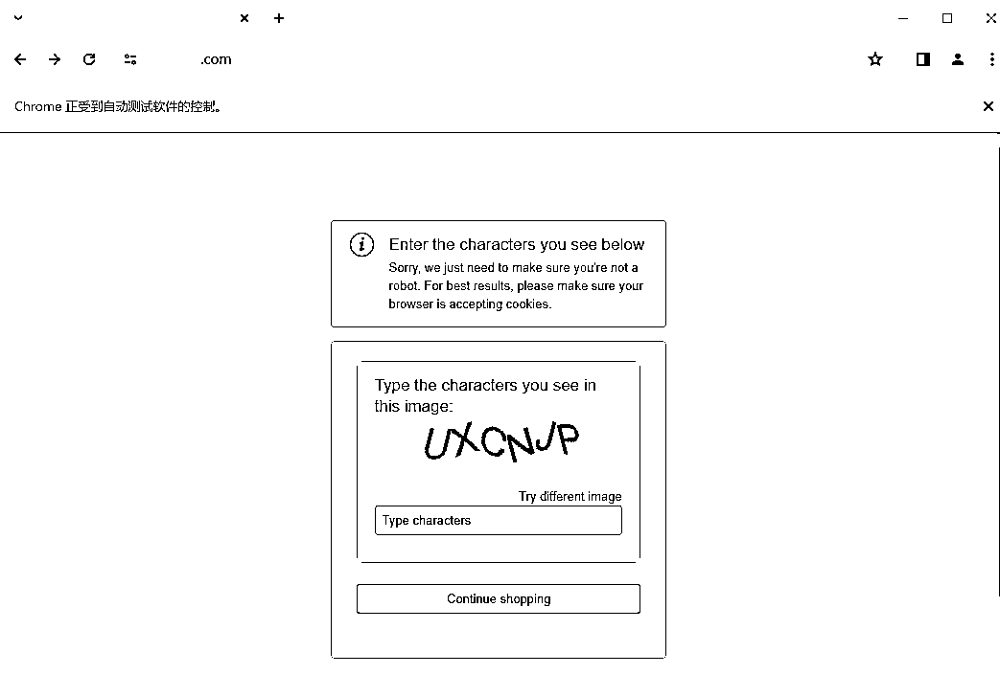
不过没有关系，我们可以重新修改提示词，在步骤2打开目标网站后加上“如果出现网页校验码，先等待人工输入校验码，直到页面出现搜索输入框，再进入下一步操作”，当然，我们也可以在ChatGPT已经给出的代码基础上和它对话，直接要求增加这一个步骤。
解决这个校验码问题后，爬虫程序在执行过程中还遇到一些小问题，比如点不到排序、折扣价少了小数点，不过没有关系，我们可以通过谷歌浏览器的开发者工具来查看页面中的实际元素和数据，再告知ChatGPT元素和数据的实际情况，最终我们得到了一个可以爬取这个电商网站产品的爬虫工具：（为了方便阅读，ChatGPT对话记录附在文末附录中）
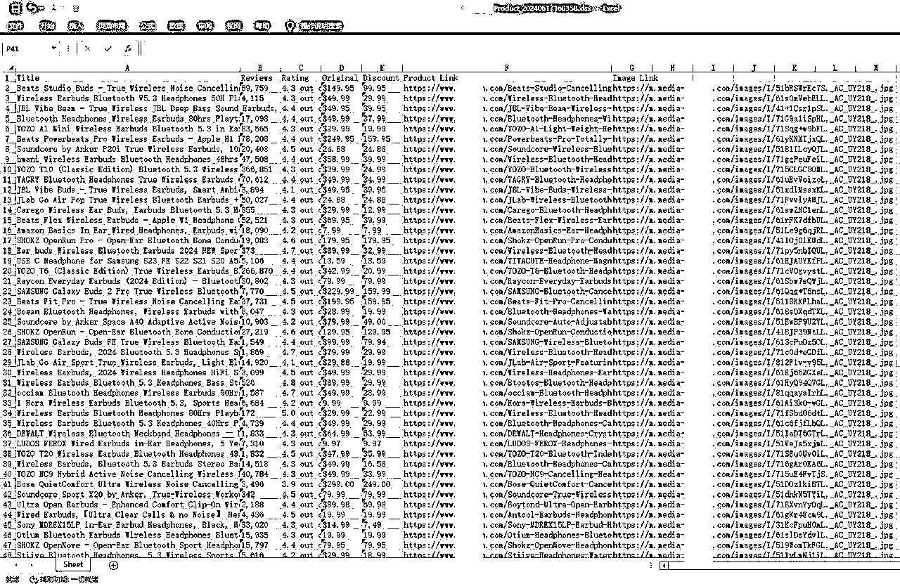
爬取某电商网站产品的最终代码如下：
import time
import datetime
from selenium import webdriver
from selenium.webdriver.common.by import By
from selenium.webdriver.common.keys import Keys
import openpyxl
def setup_browser():
options = webdriver.ChromeOptions()
options.add_argument("--start-maximized")
driver = webdriver.Chrome(options=options)
return driver
def wait_for_search_box(driver):
while True:
time.sleep(2)
try:
driver.find_element(By.ID, "twotabsearchtextbox")
break
except:
pass
def search_keyword(driver, keyword):
driver.get("https://www.xxx.com/") ### 目标网站修改成需要爬取网页的链接 ###
check_for_captcha(driver)
wait_for_search_box(driver)
search_box = driver.find_element(By.ID, "twotabsearchtextbox")
search_box.send_keys(keyword)
search_box.send_keys(Keys.RETURN)
def sort_by_best_sellers(driver):
time.sleep(2) # wait for page to load
check_for_captcha(driver)
form_element = driver.find_element(By.CSS_SELECTOR, "form.aok-inline-block")
form_element.click()
sort_dropdown = driver.find_element(By.CSS_SELECTOR, "select#s-result-sort-select")
best_sellers_option = sort_dropdown.find_element(By.XPATH, "//option[contains(text(),'Best Sellers')]")
best_sellers_option.click()
def check_for_captcha(driver):
while True:
time.sleep(2) # wait for the page to load
if "captcha" in driver.current_url:
print("Please solve the CAPTCHA and then press Enter...")
input()
driver.refresh()
else:
break
def extract_product_info(product):
title = product.find_element(By.CSS_SELECTOR, "span.a-text-normal").text
try:
reviews = product.find_element(By.CSS_SELECTOR, "span.a-size-base").text
except:
reviews = "No reviews"
try:
rating = product.find_element(By.CSS_SELECTOR, "span.a-icon-alt").get_attribute("textContent")
except:
rating = "No rating"
try:
price_int = product.find_element(By.CSS_SELECTOR, "span.a-price-whole").text
price_frac = product.find_element(By.CSS_SELECTOR, "span.a-price-fraction").text
price = f"{price_int}.{price_frac}"
except:
price = "No price"
try:
original_price = product.find_element(By.CSS_SELECTOR, "span.a-text-price").text
except:
original_price = price
link = product.find_element(By.CSS_SELECTOR, "a.a-link-normal").get_attribute("href")
image = product.find_element(By.CSS_SELECTOR, "img.s-image").get_attribute("src")
return [title, reviews, rating, original_price, price, link, image]
def save_to_excel(data, filename):
wb = openpyxl.Workbook()
ws = wb.active
ws.append(["Title", "Reviews", "Rating", "Original Price", "Discount Price", "Product Link", "Image Link"])
for row in data:
ws.append(row)
wb.save(filename)
def main():
keyword = "Wireless Earphones"
driver = setup_browser()
try:
search_keyword(driver, keyword)
sort_by_best_sellers(driver)
all_products = []
for page in range(1, 6):
time.sleep(5) # wait for the page to load
check_for_captcha(driver)
products = driver.find_elements(By.CSS_SELECTOR, "div.s-main-slot div.s-result-item")
for product in products:
try:
product_info = extract_product_info(product)
all_products.append(product_info)
except Exception as e:
print(f"Error extracting product info: {e}")
next_page = driver.find_element(By.CLASS_NAME, "s-pagination-next")
driver.execute_script("arguments[0].click();", next_page)
time.sleep(5 + page) # wait between 5 to 10 seconds
timestamp = datetime.datetime.now().strftime("%Y%m%d%H%M%S")
filename = f"Product_{timestamp}.xlsx"
save_to_excel(all_products, filename)
print(f"Data saved to {filename}")
finally:
driver.quit()
if __name__ == "__main__":
main()
实现爬取某电商网站产品的爬虫工具后，我开始尝试编写爬取某网站笔记的爬虫工具。
我同样根据某网站笔记页面的实际情况修改出提示词：
1. 使用 python3 和最新版的 selenium 2. 目标网站：https://www.xxx.com/ 3. 打开某网站页面后等待用户登录某网站账号，直到页面左侧“登录”按钮变成“我”，再进入下一步操作 3. 输入关键字[ AI ]，点击搜索按钮 4. 选项选择[ 图文 ] 5. 爬取笔记: 爬取笔记标题、作者名称、点赞数、图片链接 6. 爬取后的内容保存到Excel文件中，Excel文件命名为某网站_笔记_时间 7. 爬取前200个笔记，你需要向下滚动页面加载更多笔记，每滚动完1次休眠5s~10s 请给我完整可运行的程序，让我看到浏览器中操作的过程，并指导我安装程序依赖的所有库。 你可以先执行步骤 2 、步骤 3 和 步骤 4 了解网页的结构，然后再生成代码。
注：“某网站”改为网站名称，目标网站改为需要爬取网页的链接。
这一次，我遇到了许多问题：
首先是遇到该网站的反自动化检测，我和ChatGPT对话，尝试了许多方案，包括手动登录、模拟人工操作、使用无头浏览器，但都被该网站检测出来：
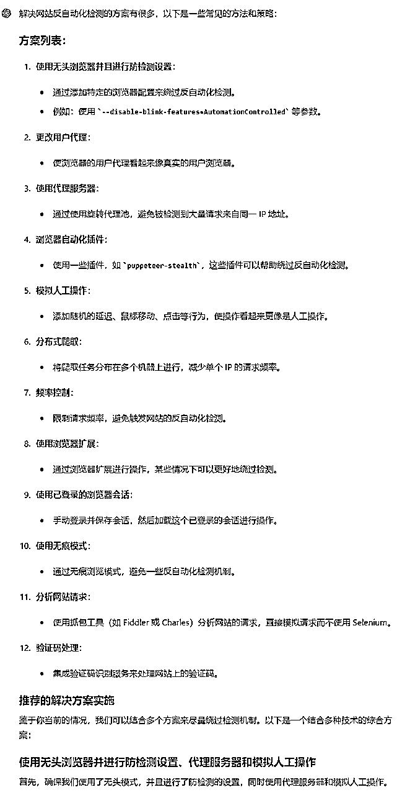
最终，ChatGPT给出的其中一个方案“Puppeteer + Puppeteer-Stealth”总算解决了反自动化检测问题：
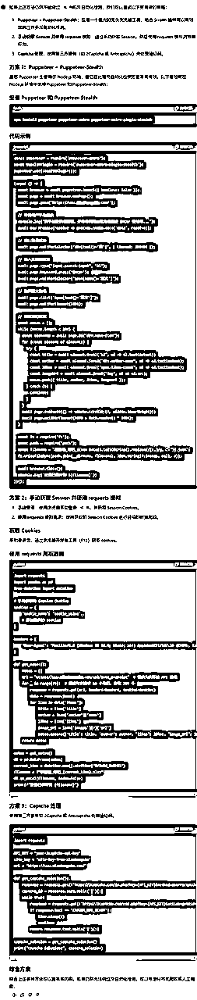
接下来是登录问题，登录前后需要识别特定元素，使得程序判断是否继续进行下一步操作，最终通过查看登录按钮的元素得以解决；
再接下来是搜索后点击不到“图文”选项，同样通过查看开发者窗口中的对应元素得以解决；
紧接着是爬取笔记的数据结果为空的问题，同样通过查看开发者窗口中的笔记元素，并复制元素Html代码让ChatGPT分析并修正代码，最终得以解决。
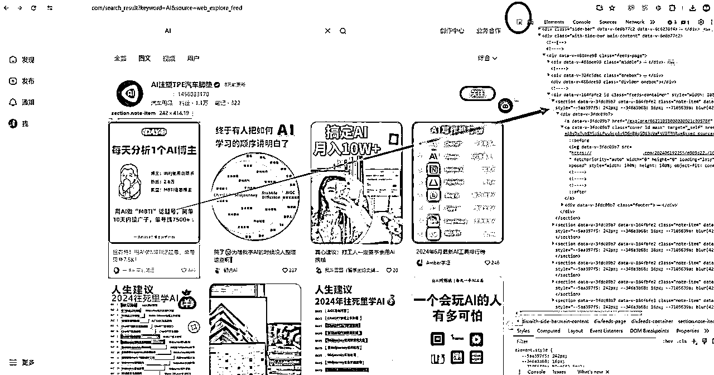
最后是向下滚动页面加载更多笔记并且保存的数据不能出现重复笔记。ChatGPT在程序中增加了 seen_ids = set() ，把每次已经保存的笔记id保存在seen_ids并在下一次处理时做校验，防止笔记的重复保存；向下滚动的程序一开始并不生效，后面我根据自己浏览网页的经验，要求ChatGPT在滚动之前先把鼠标移动到笔记区域，确保滚动事件能作用在页面的笔记区域，最终解决了滚动问题，并按设定爬取并保存了200条该网站的笔记：
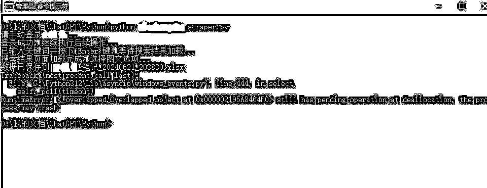
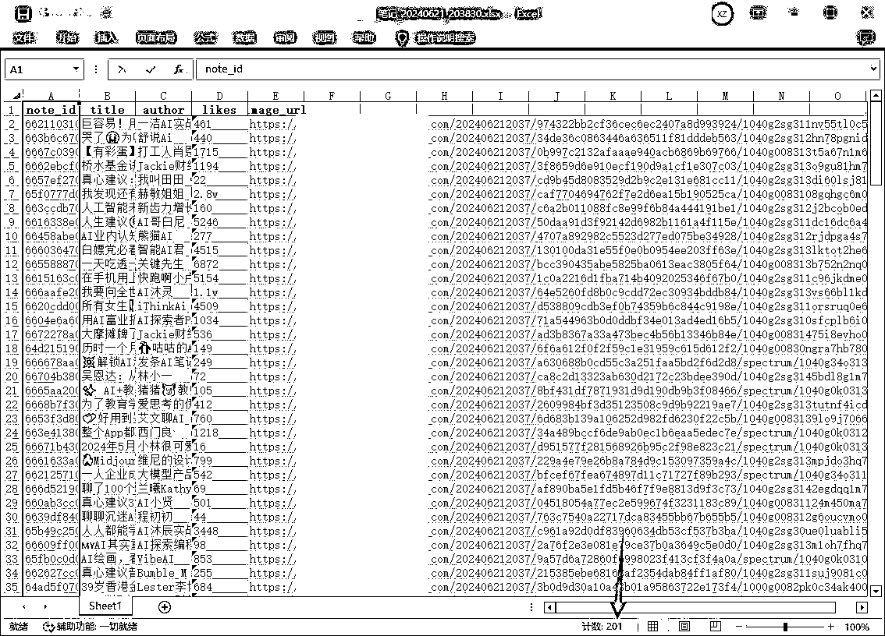
爬取某网站笔记的最终代码如下（注：“某网站”改为网站名称，目标网站改为需要爬取网页的链接）：
import asyncio
from pyppeteer import launch
import pandas as pd
from datetime import datetime
async def main():
browser = await launch(headless=False, executablePath='C:\\chromium\\chrome-win\\chrome.exe', args=[
'--no-sandbox',
'--disable-setuid-sandbox',
'--disable-blink-features=AutomationControlled',
'--window-size=1920,1080'
])
page = await browser.newPage()
await page.setViewport({'width': 1920, 'height': 1080})
await page.setUserAgent('Mozilla/5.0 (Windows NT 10.0; Win64; x64) AppleWebKit/537.36 (KHTML, like Gecko) Chrome/91.0.4472.124 Safari/537.36')
# 打开小红书首页
await page.goto('https://www.xxx.com/') ### 目标网站修改成需要爬取网页的链接 ###
# 等待用户手动登录
print("请手动登录某网站...")
# 确认登录成功（检测页面左侧的“登录”按钮是否消失）
await page.waitForSelector("button.login-btn", {'timeout': 300000, 'hidden': True})
print("登录成功，继续执行后续操作...")
# 输入关键词搜索
await page.type("input[class*='search-input']", "AI")
await page.keyboard.press('Enter')
print("已输入关键词并按下 Enter 键，等待搜索结果加载...")
# 确认搜索结果页面加载完成
try:
await page.waitForSelector("div#short_note", {'timeout': 60000})
print("搜索结果页面加载完成，选择图文选项...")
except Exception as e:
print("等待搜索结果页面加载超时:", e)
await browser.close()
return
# 选择图文选项
await page.click("div#short_note")
await asyncio.sleep(5)
# 将鼠标移动到笔记区域
await page.hover("div#short_note")
await asyncio.sleep(2)
# 爬取笔记数据
notes = []
seen_ids = set()
while len(notes) < 200:
elements = await page.querySelectorAll("section.note-item")
for element in elements:
try:
note_id = await page.evaluate('(element) => element.querySelector("a.cover")?.href.split("/").pop()', element)
if not note_id or note_id in seen_ids:
continue
seen_ids.add(note_id)
title = await page.evaluate('(element) => element.querySelector("a.title span")?.textContent', element)
author = await page.evaluate('(element) => element.querySelector("div.author-wrapper a.author span.name")?.textContent', element)
likes = await page.evaluate('(element) => element.querySelector("span.like-wrapper span.count")?.textContent', element)
image_url = await page.evaluate('(element) => element.querySelector("a.cover img")?.src', element)
if title and author and likes and image_url:
notes.append({'note_id': note_id, 'title': title, 'author': author, 'likes': likes, 'image_url': image_url})
if len(notes) >= 200:
break
except Exception as e:
print(f"Error extracting data from element: {e}")
continue
if len(notes) >= 200:
break
# 页面向下滚动一定高度
await page.evaluate('window.scrollBy(0, document.body.scrollHeight)')
await asyncio.sleep(5) # 等待5秒
df = pd.DataFrame(notes)
current_time = datetime.now().strftime("%Y%m%d_%H%M%S")
filename = f"某网站_笔记_{current_time}.xlsx"
df.to_excel(filename, index=False)
await browser.close()
print(f"数据已保存到 {filename}")
asyncio.run(main())
前面，我们通过提示词让ChatGPT编写爬虫工具的时候，经常会遇到两个问题：
第一，如果提示词说明不够详尽，ChatGPT给出的代码仍然可能偏离需求或者使用错误的方案；
第二，如果需要爬取的网站的HTML结构ChatGPT刚好没学过或者出现改版，那么，程序中设定的内容元素可能存在偏差。
那么，我们有什么办法可以让ChatGPT编写的代码避免或者减少这些问题吗？答案是肯定的！我之前在生财发布的精华文章《怎样在航海21天通过ChatGPT编程上线20个Chrome插件》中摸索了10个编程思路，其中“指定代码：让ChatGPT学习与项目相关的参考代码，再在它学习的代码基础上做开发”，就可以解决第一个问题。
刚好最近看到圈友土豆君发布了一篇文章《零基础如何用好AI来爬取数据》，详细讲解了怎样通过ChatGPT分析网页中需要爬取内容的代码来确定程序中的内容元素，很好地解决了上面提到的第二个问题。
前面我尝试修改指令让ChatGPT编写爬取某网站笔记的爬虫工具，然而却遇到该网站的反自动化检测的难题。我和ChatGPT对话，尝试了许多方案，包括手动登录、模拟人工操作、使用无头浏览器，但都被该网站检测出来。最终，ChatGPT给出的其中一个方案“Puppeteer + Puppeteer-Stealth”总算解决了反自动化检测问题。
一般情况下，我们让ChatGPT编写一个爬虫工具，它学习过很多方案，但它不会直接选择“Puppeteer + Puppeteer-Stealth”的方案。今天，我们尝试让ChatGPT直接学习已经编写好的这个爬取某网站笔记的爬虫程序，然后编写一个爬取某问答网站的爬虫工具。
首先，我们先按圈友土豆君的思路，通过谷歌浏览器开发者工具获取需要爬取的内容范围，再右键点击相应的HTML代码，复制元素代码（注意：复制元素代码的时候，如果你需要ChatGPT识别其它菜单或按钮，比如这里的“热榜”，可以把这些元素一并复制给ChatGPT），粘贴到 内容范围.txt 文件中；
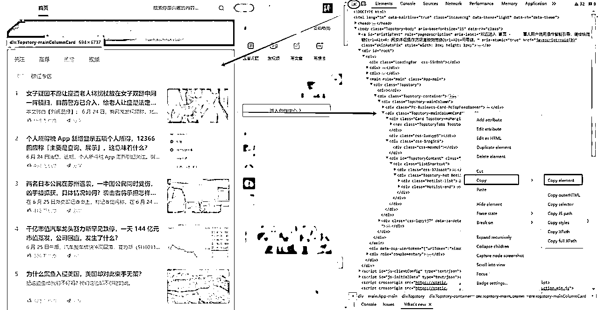
接着，我们根据知乎热榜页面的实际情况，修改指令：
写一个爬虫程序，按下面的要求在我的 windows 电脑上帮我抓取某问答网站文章。 1. 使用 python 语言 2. 目标网站：https://www.xxx.com/ 3. 打开某问答网站页面后等待用户登录账号，直到页面出现热榜列表文章，再进入下一步操作 4. 爬取内容：爬取序号、标题、摘要、文章链接、点赞数和图片链接 5. 爬取后的内容保存到Excel文件中，Excel文件命名为问答_热榜_时间 6. 爬取热榜的50个榜单文章，你需要每隔5s向下滚动一次页面，直到滚动到页底，再在保存文件 请在下面代码基础上修改输出完整可运行的程序，注意保留原来代码爬取数据的方案和逻辑。让我看到浏览器中操作的过程，并指导我安装程序依赖的所有库。 你可以先分析文章[ 内容范围.txt ]了解网页中需要爬取的内容的结构，然后再生成代码。
注：“某问答网站”改为网站名称，目标网站改为需要爬取网页的链接。
然后附上爬取某网站笔记的爬虫程序，让ChatGPT学习后编写爬取该问答网站热榜的爬虫工具。注意：指令中我特意不指定使用“Puppeteer + Puppeteer-Stealth”方案，看看ChatGPT是否会根据我们指定的代码编写出这个方案的爬虫程序。
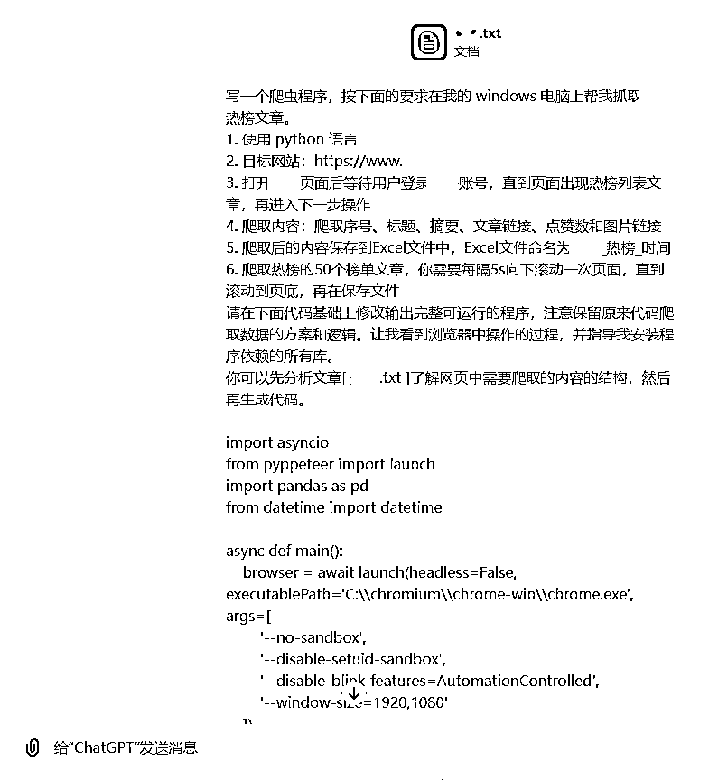
很快，ChatGPT输出了“Puppeteer + Puppeteer-Stealth”方案的Python爬虫程序：（为了方便阅读，ChatGPT对话记录附在文末附录中）
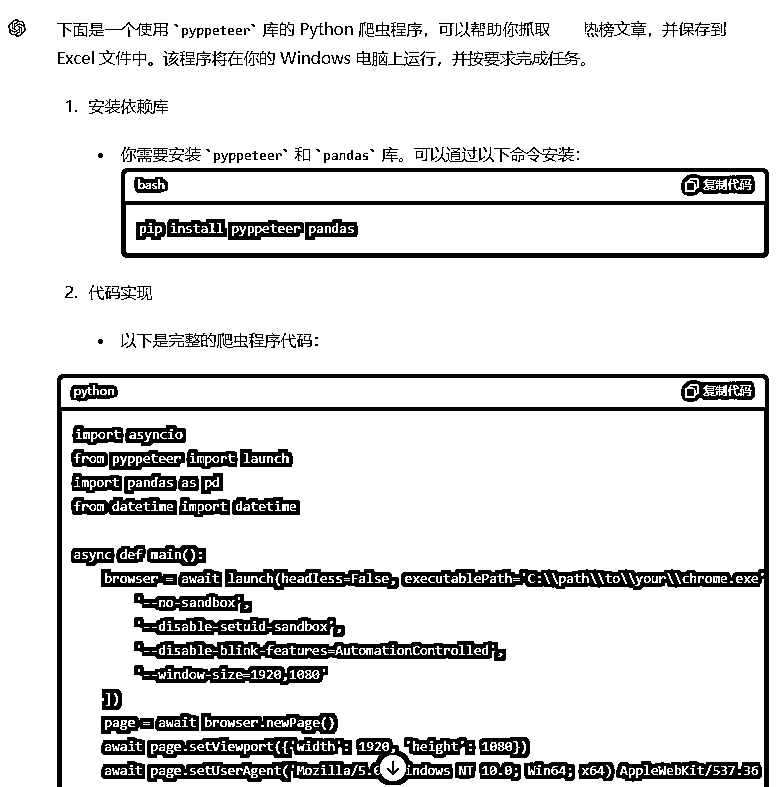
测试过程中仍然存在一些小问题，但都可以通过和ChatGPT对话解决，最终ChatGPT编写的爬虫工具成功爬取了该问答网站的文章列表：
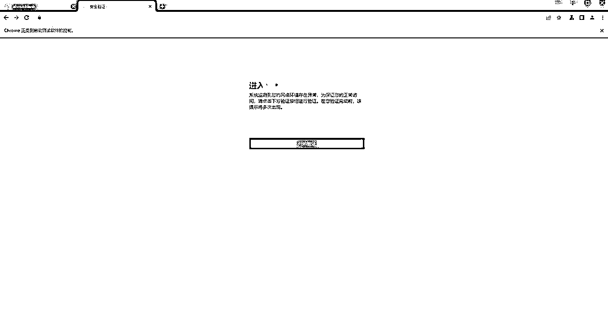
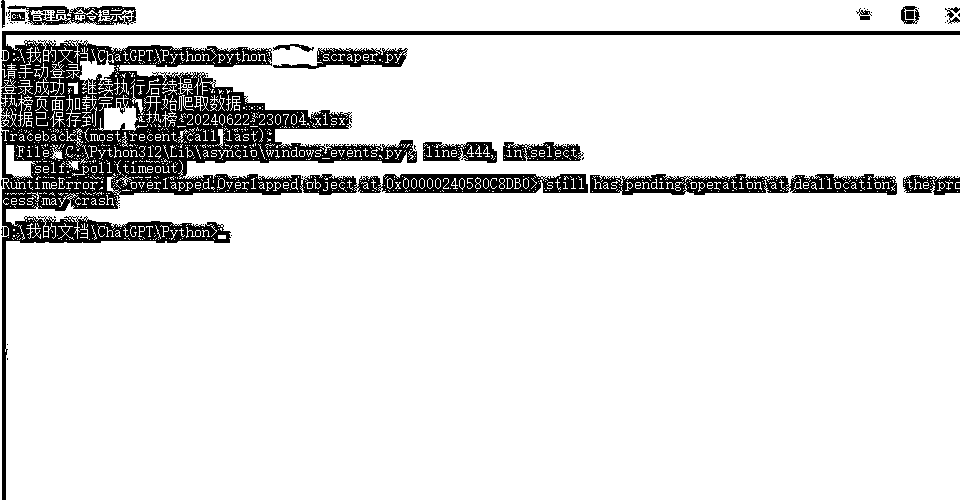
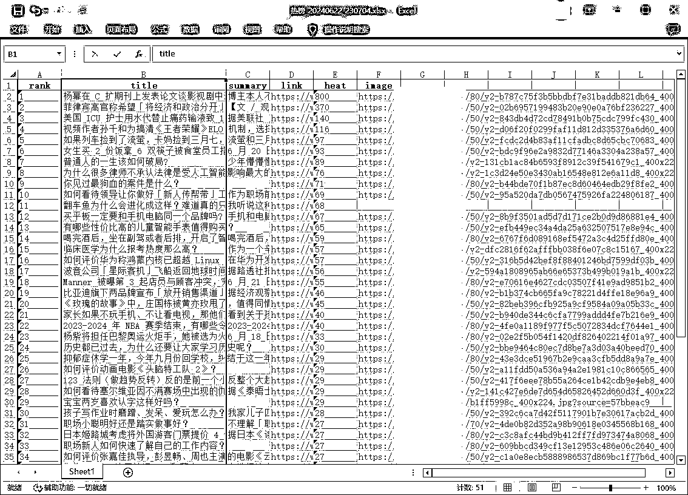
爬取该问答网站的最终代码如下：
import asyncio
from pyppeteer import launch
import pandas as pd
from datetime import datetime
async def main():
browser = await launch(headless=False, executablePath='C:\\chromium\\chrome-win\\chrome.exe', args=[
'--no-sandbox',
'--disable-setuid-sandbox',
'--disable-blink-features=AutomationControlled',
'--window-size=1920,1080'
])
page = await browser.newPage()
await page.setViewport({'width': 1920, 'height': 1080})
await page.setUserAgent('Mozilla/5.0 (Windows NT 10.0; Win64; x64) AppleWebKit/537.36 (KHTML, like Gecko) Chrome/91.0.4472.124 Safari/537.36')
# 打开知乎登录页面
await page.goto('https://www.xxx.com/') ### 目标网站修改成需要爬取网页的链接 ###
# 等待用户登录
print("请手动登录某问答网站...")
await page.waitForSelector(".TopstoryTabs", {'timeout': 300000})
print("登录成功，继续执行后续操作...")
# 点击热榜标签
await page.click("a[data-za-extra*='热榜']")
await asyncio.sleep(5) # 等待页面加载
# 确认热榜页面加载完成
await page.waitForSelector(".HotList-list", {'timeout': 60000})
print("热榜页面加载完成，开始爬取数据...")
# 爬取热榜文章
articles = []
seen_links = set()
for _ in range(10): # 每次爬取页面的内容，并向下滚动
elements = await page.querySelectorAll(".HotItem")
for element in elements:
try:
link = await page.evaluate('(element) => element.querySelector(".HotItem-content a") ? element.querySelector(".HotItem-content a").href : null', element)
if not link or link in seen_links:
continue
rank = await page.evaluate('(element) => element.querySelector(".HotItem-rank") ? element.querySelector(".HotItem-rank").innerText : null', element)
title = await page.evaluate('(element) => element.querySelector(".HotItem-title") ? element.querySelector(".HotItem-title").innerText : null', element)
summary = await page.evaluate('(element) => element.querySelector(".HotItem-excerpt") ? element.querySelector(".HotItem-excerpt").innerText : null', element)
heat = await page.evaluate('(element) => element.querySelector(".HotItem-metrics") ? element.querySelector(".HotItem-metrics").innerText.split(" ")[0] : null', element)
image = await page.evaluate('(element) => element.querySelector(".HotItem-img img") ? element.querySelector(".HotItem-img img").src : null', element)
articles.append({
'rank': rank,
'title': title,
'summary': summary,
'link': link,
'heat': heat,
'image': image
})
seen_links.add(link)
if len(articles) >= 50:
break
except Exception as e:
print(f"Error extracting data from element: {e}")
continue
if len(articles) >= 50:
break
await page.evaluate('window.scrollBy(0, document.body.scrollHeight)')
await asyncio.sleep(5) # 等待5秒
# 保存到Excel文件
df = pd.DataFrame(articles)
current_time = datetime.now().strftime("%Y%m%d_%H%M%S")
filename = f"问答_热榜_{current_time}.xlsx"
df.to_excel(filename, index=False)
await browser.close()
print(f"数据已保存到 {filename}")
asyncio.run(main())
既然ChatGPT可以通过学习已有的爬虫代码进行二次开发，而且能开发出和参考代码相接近并且更符合我们预期的代码，那么，我们是否可以构建一个GPTs，把我们开发的或者收集的各种爬虫方案的代码作为GPTs的知识库，再让ChatGPT根据实际业务需求学习相应的知识库代码后做二次开发，这样，我们是否有可能更高效的通过ChatGPT编写出符合业务需求的爬虫工具？
有了这个想法，我于是尝试构建一个辅助生成爬虫程序的GPTs。我先把前面爬取某网站文章和爬取某网站笔记的爬虫代码保存到记事本文件，分别命名为“selenium.txt”和“puppeteer.txt”，上传到GPTs的知识库中：
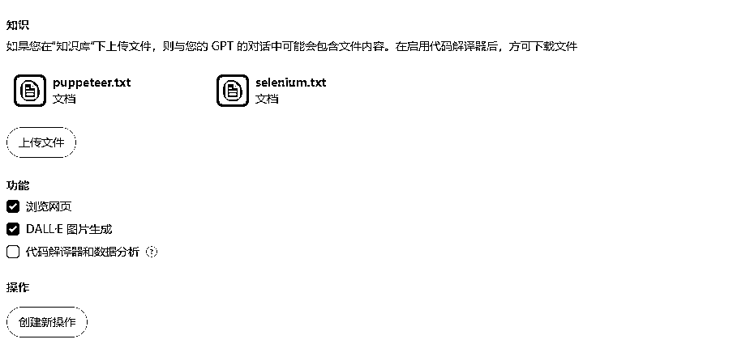
接着，我们构建这个GPTs的指令如下：
Step 1：收到用户的信息，都先让用户填写下面信息： 1. 目标网站： 2. 搜索或过滤规则： 3. 爬取内容： 4. 保存文件类型和名称： 5. 翻页或加载更多内容的规则： Step 2：用户填写上面信息并提交。 Step 3：收到用户提交的信息后，询问用户选择下面哪种Python方案： 1. 常用爬虫方案：使用 python3 和最新版的 selenium 2. 反自动化检测方案：使用 python3 和 Puppeteer + Puppeteer-Stealth Step 4：用户选择Python方案并提交。 Step 5：收到用户选择的方案后，询问用户是否上传网站需要爬取的内容HTML的txt文件。 Step 6：用户上传网站需要爬取的内容HTML的txt文件或者直接回复网站结构信息。 Step 7：收到用户提交的网站需要爬取的内容HTML的txt文件或者网站结构信息后 1、先分析网站需要爬取的内容HTML的txt文件或者网站结构信息，了解网页中需要爬取的内容的结构； 2、再根据用户选择的Python方案，学习知识库中对应名称的文件程序； 3、在对应名称的文件程序的基础上，按照用户填写的“目标网站”、“搜索或过滤规则”、“保存文件类型和名称”和“翻页或加载更多内容的规则”等信息，输出完整可运行的程序，注意保留知识库中对应名称的文件原来程序的爬取数据的方案和逻辑； 4、让用户看到浏览器中操作的过程，并指导用户安装程序依赖的所有库。
GPTs创建好之后，我们让GPTs重新生成爬取某网站文章和爬取某网站笔记的爬虫代码。通过提交需要爬取的网站的相关信息、选择爬虫方案、提交网页结构文件，GPTs就能生成对应方案爬取相关网站的爬虫程序。（为了方便阅读，ChatGPT对话记录附在文末附录中）
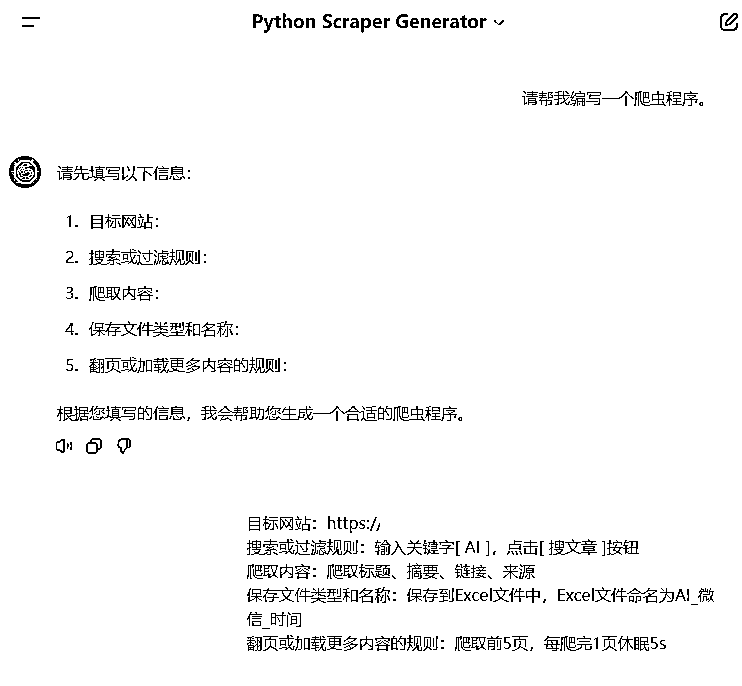
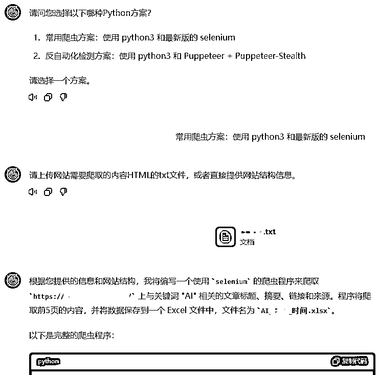
如果我们积累更多Python爬虫方案的代码，可以进一步补充这个GPTs的知识库，就能为用户提供生成其它各种方案的爬虫程序。
作为一名有一点编程基础但并不专业的不合格软件专业人员，我从没系统学习过Python、Java、PHP等主流编程语言，但这并不妨碍我曾经和两位精通技术的Partner通过WordPress、ThinkPHP等开源程序做了不少PHP互联网项目，ChatGPT出现之后，我通过ChatGPT编程实现了人生的第一个Chrome插件GPTBLOX并收获1500多用户（本文附录中的截图都是通过这个插件保存，插件还支持保存HTML、TXT和PDF等）。
这一次参加AI编程航海，我本来的初衷是想学习航海中的更多AI编程思路，补充自己的盲点和不足，但我并没有想着通过Python在未来落地一些产品。然而，随着航海的开展和各种爬虫程序的实现，我开始思考是否可以把一些实现特定任务的Python程序做成产品。正当我准备着手摸索的时候，AI编程航海直接给我们带来一场让我眼前一亮的分享《编程PYTHON封装为可执行程序exe》。
我认真学习了圈友壹壹的这个分享，并于第二天着手测试，把前面ChatGPT生成的爬取网站文章的爬虫工具增加一个UI界面：
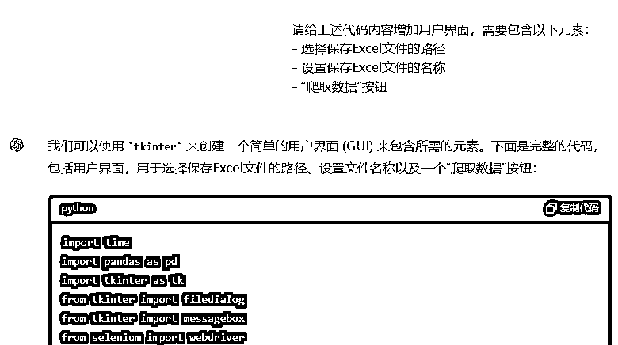
最终增加UI后的代码如下：
import time
import pandas as pd
import tkinter as tk
from tkinter import filedialog
from tkinter import messagebox
from selenium import webdriver
from selenium.webdriver.common.by import By
from selenium.webdriver.common.keys import Keys
from selenium.webdriver.chrome.service import Service as ChromeService
from selenium.webdriver.support.ui import WebDriverWait
from selenium.webdriver.support import expected_conditions as EC
from webdriver_manager.chrome import ChromeDriverManager
def start_scraping(save_path, file_name):
# 设置Chrome选项
chrome_options = webdriver.ChromeOptions()
chrome_options.add_argument("--start-maximized")
# 创建WebDriver实例
driver = webdriver.Chrome(service=ChromeService(ChromeDriverManager().install()), options=chrome_options)
# 访问目标网站
driver.get("https://www.xxx.com/") ### 目标网站修改成需要爬取网页的链接 ###
# 输入关键字并点击搜索按钮
search_box = driver.find_element(By.ID, "query")
search_box.send_keys("AI")
search_box.send_keys(Keys.RETURN)
time.sleep(3) # 等待页面加载
# 准备存储数据的列表
data = []
# 爬取前5页
for page in range(1, 6):
print(f"正在爬取第{page}页...")
WebDriverWait(driver, 10).until(
EC.presence_of_element_located((By.XPATH, "//ul[@class='news-list']/li"))
)
articles = driver.find_elements(By.XPATH, "//ul[@class='news-list']/li")
for article in articles:
try:
title_element = article.find_element(By.XPATH, ".//h3/a")
title = title_element.text
link = title_element.get_attribute("href")
print(f"Title: {title}") # 打印调试信息
print(f"Link: {link}") # 打印调试信息
except Exception as e:
print("Error finding title or link:", e)
title = "N/A"
link = "N/A"
try:
summary = article.find_element(By.XPATH, ".//p").text
print(f"Summary: {summary}") # 打印调试信息
except Exception as e:
print("Error finding summary:", e)
summary = "N/A"
try:
source = article.find_element(By.XPATH, ".//div[@class='s-p']/span[@class='all-time-y2']").text
print(f"Source: {source}") # 打印调试信息
except Exception as e:
print("Error finding source:", e)
source = "N/A"
# 添加到数据列表
data.append({"Title": title, "Summary": summary, "Link": link, "Source": source})
# 翻页
if page < 5:
try:
next_button = driver.find_element(By.ID, "sogou_next")
next_button.click()
WebDriverWait(driver, 10).until(
EC.presence_of_element_located((By.XPATH, "//ul[@class='news-list']/li"))
)
time.sleep(5) # 每爬完一页休眠5秒
except Exception as e:
print("无法点击下一页:", e)
break
# 关闭浏览器
driver.quit()
# 保存数据到Excel文件
current_time = time.strftime("%Y%m%d_%H%M%S")
file_name = f"{file_name}_{current_time}.xlsx"
file_path = f"{save_path}/{file_name}"
df = pd.DataFrame(data)
df.to_excel(file_path, index=False, engine='openpyxl')
print(f"数据已保存到 {file_path}")
messagebox.showinfo("完成", f"数据已保存到 {file_path}")
def select_path():
path = filedialog.askdirectory()
if path:
entry_path.delete(0, tk.END)
entry_path.insert(0, path)
def scrape_data():
save_path = entry_path.get()
file_name = entry_filename.get()
if not save_path or not file_name:
messagebox.showwarning("警告", "请提供保存路径和文件名称")
return
start_scraping(save_path, file_name)
# 创建主窗口
root = tk.Tk()
root.title("XXX网站爬虫")
# 创建并放置组件
label_path = tk.Label(root, text="选择保存路径:")
label_path.grid(row=0, column=0, padx=10, pady=10)
entry_path = tk.Entry(root, width=40)
entry_path.grid(row=0, column=1, padx=10, pady=10)
button_path = tk.Button(root, text="浏览", command=select_path)
button_path.grid(row=0, column=2, padx=10, pady=10)
label_filename = tk.Label(root, text="设置文件名称:")
label_filename.grid(row=1, column=0, padx=10, pady=10)
entry_filename = tk.Entry(root, width=40)
entry_filename.grid(row=1, column=1, padx=10, pady=10)
button_scrape = tk.Button(root, text="爬取数据", command=scrape_data)
button_scrape.grid(row=2, columnspan=3, pady=20)
# 启动主循环
root.mainloop()
然后封装成一个可执行程序：
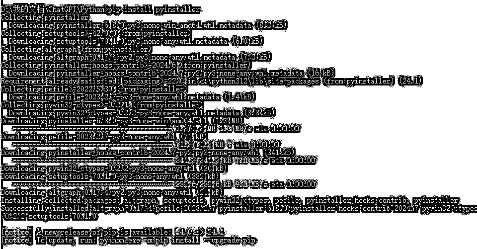
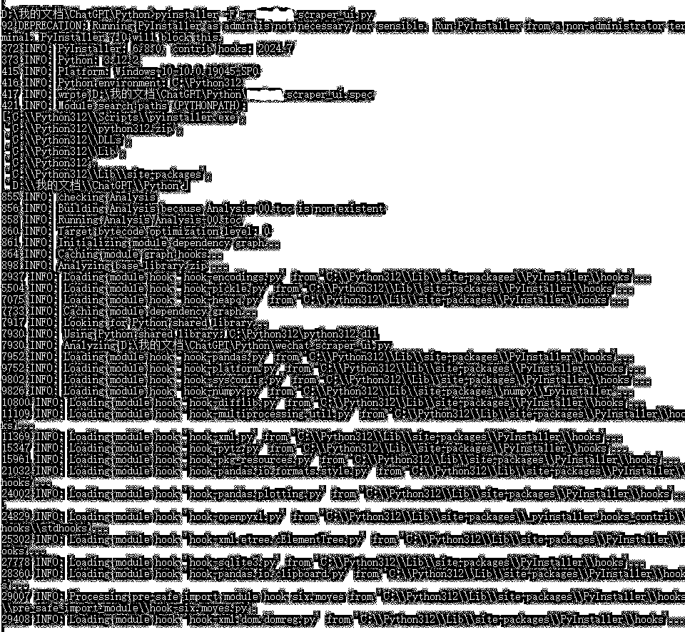

虽然这仅仅是一个非常初级的可执行程序，但却给我们许多不那么擅长编程的人打开了一扇门：我们完全可以借助ChatGPT之力或者开源程序，实现各种特定任务的Python可执行程序，比如爬虫、图片处理、视频处理、文件处理、数据分析等等。
这让我想起去年Code Interpreter发布之后，在Github和Twitter上爆火的一个项目：
https://github.com/chaseleantj/gpt-prompts
只需要把一段指令和一张图片提供给ChatGPT，Code Interpreter就会生成Python程序并自动在虚拟环境中执行，生成图片逐渐隐藏的特效视频。
这个指令中，实际上带有一段详细的Python程序：
I want to apply the disintegration effect from Avengers to this image. Can you help me with it? Provide me with a link to download the video generated. Use the code below:
import imageio
import numpy as np
import random
# Load the image
image_path = "[INSERT IMAGE PATH HERE]"
image = imageio.imread(image_path)
# Define the block size
block_size = 4
# Get the dimensions of the image
height, width, _ = image.shape
# Make sure the image dimensions are divisible by block size
height -= height % block_size
width -= width % block_size
# Crop the image to the new dimensions
image = image[:height, :width]
# Calculate the number of blocks in each dimension
num_blocks_y, num_blocks_x = height // block_size, width // block_size
# Create an index map of blocks
blocks = np.dstack(np.mgrid[0:num_blocks_y, 0:num_blocks_x]).reshape(-1, 2)
# Multiply the indices by the block size to get the pixel coordinates
blocks *= block_size
# Define the distance to move the blocks (Ask the user for X in percentage, tell user default = 10%)
distance = round(0.1 * width) # Replace 0.1 with X
# Define the number of times to move each block
move_count = 3
# Create a copy of the original image to work on
working_image = image.copy()
# Convert the blocks to a list and randomly shuffle it
blocks_list = list(map(tuple, blocks))
random.shuffle(blocks_list)
# Define the number of blocks to move (Ask the user for Y in percentage, default = 2% of the total blocks)
num_blocks_to_move = int(0.02 * len(blocks_list)) # Replace 0.02 with Y
# Create a video writer context
with imageio.get_writer('/mnt/data/disintegration_effect.mp4', mode='I', fps=30) as writer:
# Write a static image to the first 3 frames
for _ in range(3):
writer.append_data(working_image)
# Loop over the blocks in the shuffled list
for _ in range(move_count):
for i in range(0, len(blocks_list), num_blocks_to_move):
# Select a slice of blocks to move
blocks_to_move = blocks_list[i:i+num_blocks_to_move]
# For each block, move it to the left by the specified distance
for block in blocks_to_move:
y, x = block
shift_distance = int(min(distance * random.random(), x)) # Don't shift more than the x-coordinate of the block
if x-shift_distance >= 0:
working_image[y:y+block_size, x-shift_distance:x+block_size-shift_distance] = working_image[y:y+block_size, x:x+block_size]
working_image[y:y+block_size, x:x+block_size] = 0
# Write the frame to the video file
writer.append_data(working_image)
于是，我想能否通过ChatGPT把这段Python改写并封装成一个可执行程序呢？答案是肯定的，我们直接上ChatGPT对话截图：
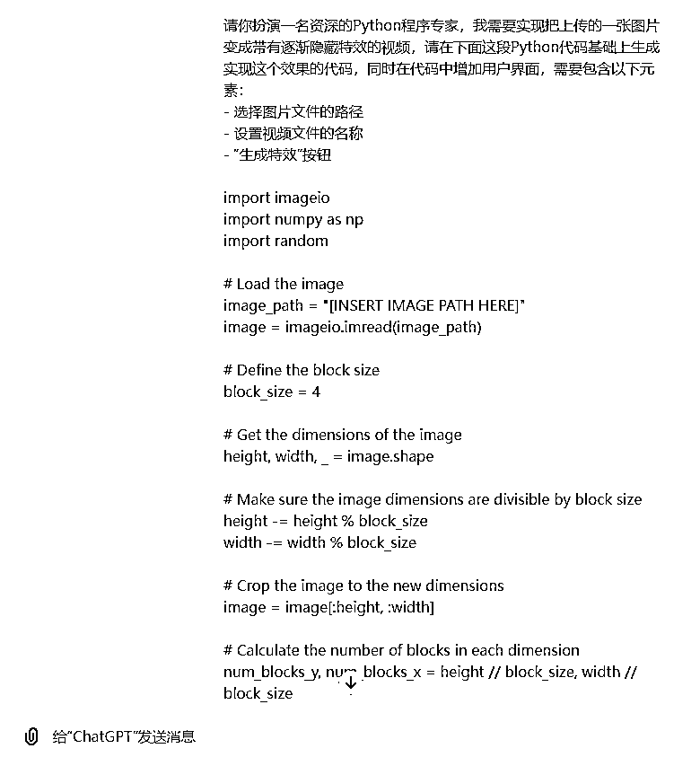
ChatGPT很快调整了代码，经过测试和优化（为了方便阅读，ChatGPT对话记录附在文末附录中），最终得到一个带有UI的Python代码：
import tkinter as tk
from tkinter import filedialog, messagebox
import imageio.v2 as imageio
import numpy as np
import random
import os
def generate_effect(image_path, video_name):
# Load the image
image = imageio.imread(image_path)
# Define the block size
block_size = 4
# Get the dimensions of the image
height, width, _ = image.shape
# Make sure the image dimensions are divisible by block size
height -= height % block_size
width -= width % block_size
# Crop the image to the new dimensions
image = image[:height, :width]
# Calculate the number of blocks in each dimension
num_blocks_y, num_blocks_x = height // block_size, width // block_size
# Create an index map of blocks
blocks = np.dstack(np.mgrid[0:num_blocks_y, 0:num_blocks_x]).reshape(-1, 2)
# Multiply the indices by the block size to get the pixel coordinates
blocks *= block_size
# Define the distance to move the blocks
distance = round(0.1 * width)
# Define the number of times to move each block
move_count = 3
# Create a copy of the original image to work on
working_image = image.copy()
# Convert the blocks to a list and randomly shuffle it
blocks_list = list(map(tuple, blocks))
random.shuffle(blocks_list)
# Define the number of blocks to move
num_blocks_to_move = int(0.02 * len(blocks_list))
# Create a video writer context
with imageio.get_writer(video_name, mode='I', fps=30) as writer:
# Write a static image to the first 3 frames
for _ in range(3):
writer.append_data(working_image)
# Loop over the blocks in the shuffled list
for _ in range(move_count):
for i in range(0, len(blocks_list), num_blocks_to_move):
# Select a slice of blocks to move
blocks_to_move = blocks_list[i:i+num_blocks_to_move]
# For each block, move it to the left by the specified distance
for block in blocks_to_move:
y, x = block
shift_distance = int(min(distance * random.random(), x)) # Don't shift more than the x-coordinate of the block
if x - shift_distance >= 0:
working_image[y:y+block_size, x-shift_distance:x+block_size-shift_distance] = working_image[y:y+block_size, x:x+block_size]
working_image[y:y+block_size, x:x+block_size] = 0
# Write the frame to the video file
writer.append_data(working_image)
def select_image():
file_path = filedialog.askopenfilename(filetypes=[("Image Files", "*.png;*.jpg;*.jpeg")])
if file_path:
image_path.set(file_path)
def generate_video():
img_path = image_path.get()
vid_name = video_name.get()
if not img_path:
messagebox.showerror("Error", "Please select an image file.")
return
if not vid_name:
messagebox.showerror("Error", "Please enter a video file name.")
return
if not vid_name.endswith(".mp4"):
vid_name += ".mp4"
generate_effect(img_path, vid_name)
messagebox.showinfo("Success", "Video generated successfully!")
# Create the main window
root = tk.Tk()
root.title("Image to Video Effect Generator")
# Create variables to store user input
image_path = tk.StringVar()
video_name = tk.StringVar()
# Create and place the widgets
tk.Label(root, text="Select Image File:").grid(row=0, column=0, padx=10, pady=10)
tk.Entry(root, textvariable=image_path, width=50).grid(row=0, column=1, padx=10, pady=10)
tk.Button(root, text="Browse...", command=select_image).grid(row=0, column=2, padx=10, pady=10)
tk.Label(root, text="Enter Video File Name:").grid(row=1, column=0, padx=10, pady=10)
tk.Entry(root, textvariable=video_name, width=50).grid(row=1, column=1, padx=10, pady=10)
tk.Button(root, text="Generate Effect", command=generate_video).grid(row=2, column=0, columnspan=3, pady=20)
# Start the GUI event loop
root.mainloop()
封装之前，需要先安装imageio库、imageio[ffmpeg]库和imageio[pyav]库：
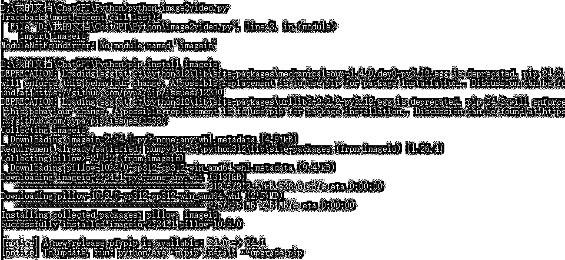
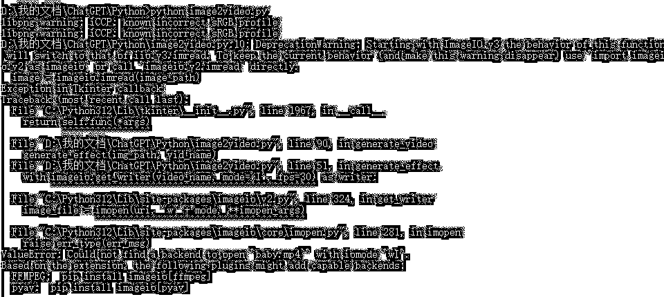
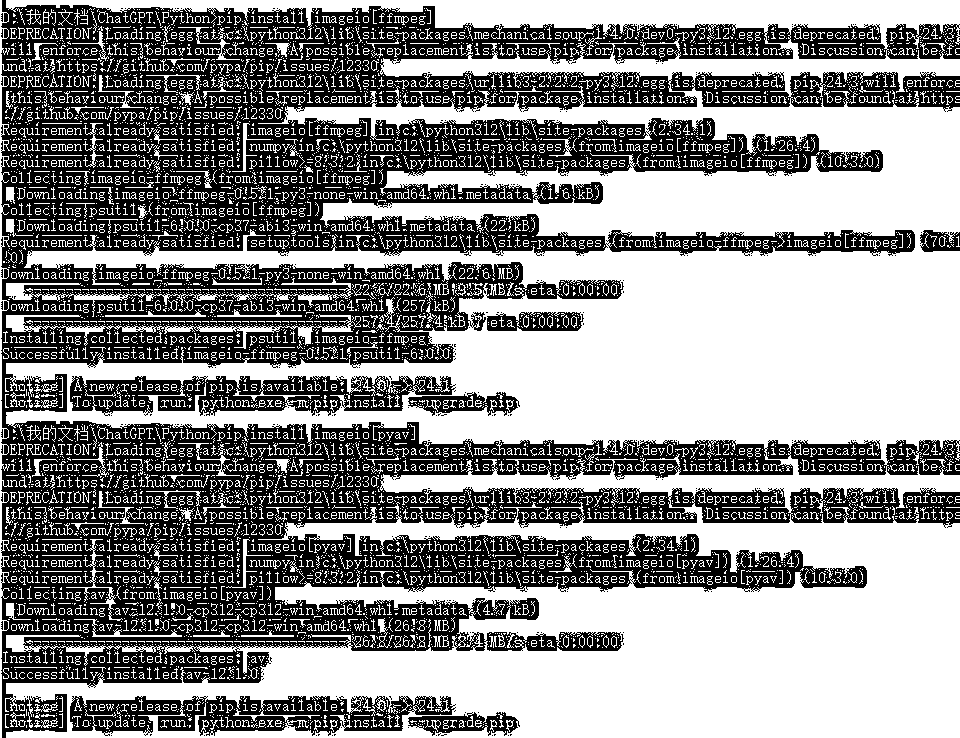
之后根据圈友壹壹分享的方法：
执行：pyinstaller -F -w image2video.py
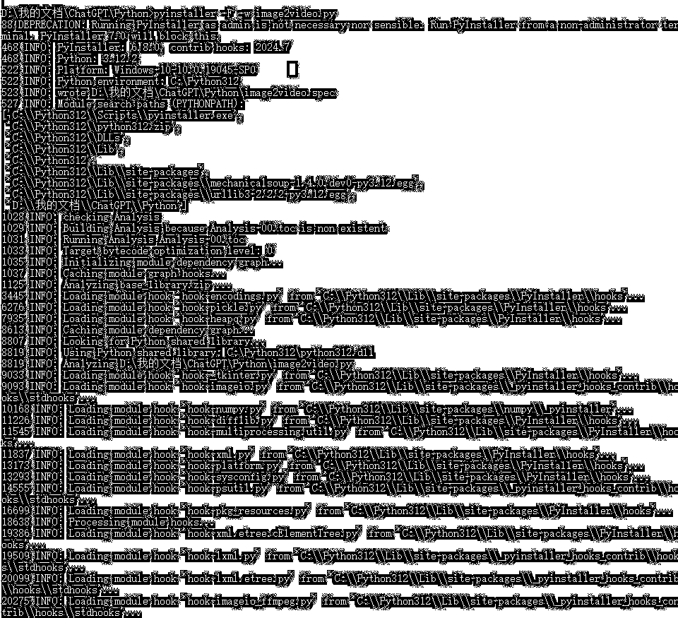
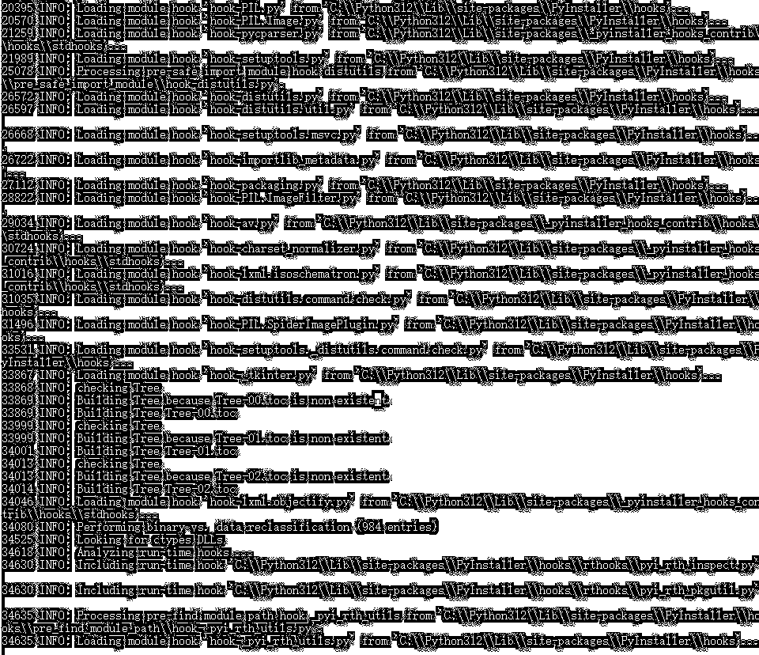
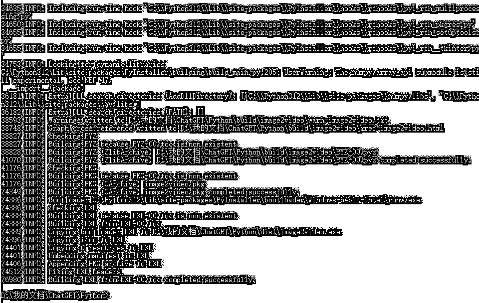
把Python程序封装成exe文件，最终实现图片变成逐渐隐藏的特效视频的功能：
经测试，这个可执行程序完美地帮我把图片变成逐渐隐藏的特效视频：
这些可执行程序开发出来之后又有什么用呢？除了自用，已经有圈友在某鱼和某书上售卖Python爬虫工具：
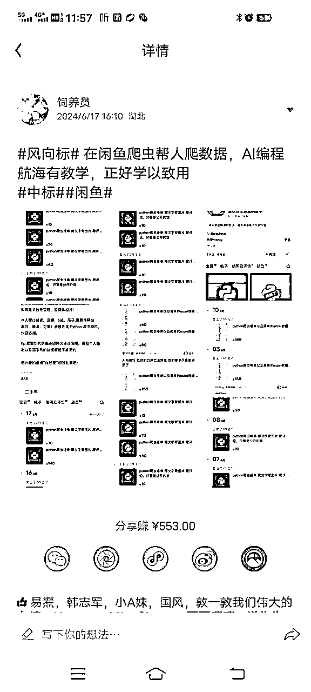
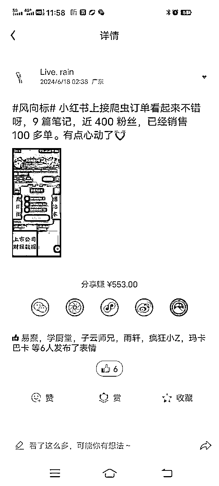
除此之外，我们是否可以帮亚马逊卖家制作数据分析工具，帮短视频用户提供视频处理工具，帮职场人员开发各种批量处理工具？只要有一个个特定的小任务和小需求，都是我们在AI时代力所能及的机会。
文末，祝大家生财有术！
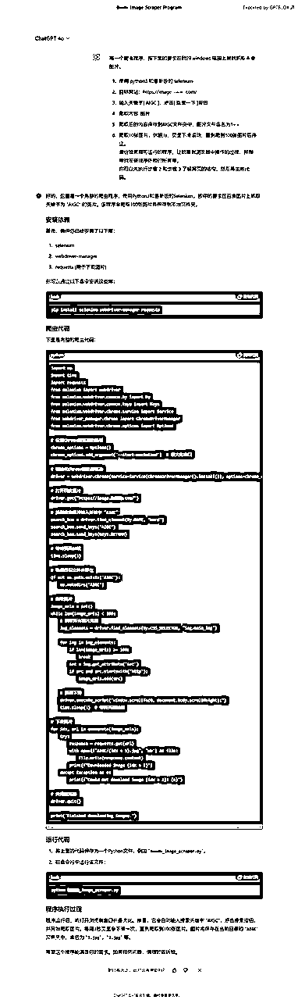

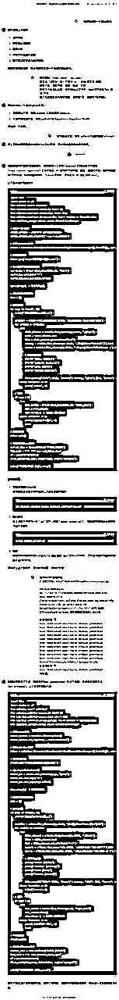
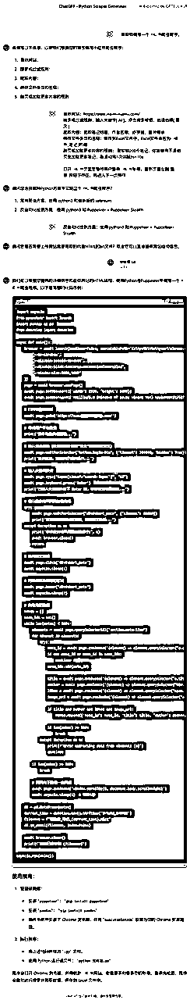